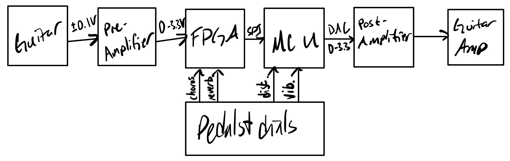
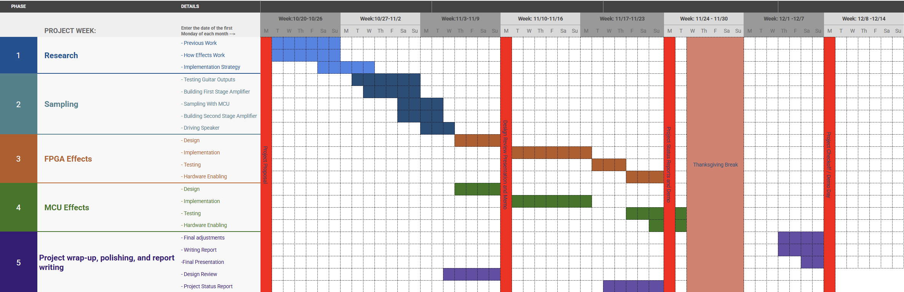
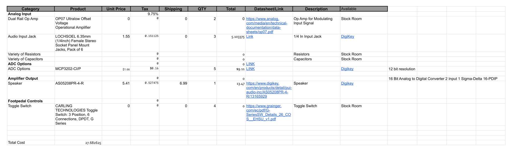

E155 Final Project: Multi-Effect Guitar Pedal
Description
Our final project will be to design and build a digital guitar amplifier capable of producing 4 audio effects: distortion, reverb, vibrato, and chorus. Using an iCE 40UP5K FPGA and an ADC, we will sample our guitar output and perform all effects related to time-delay. An STM32L432KC microcontroller will perform all modifications that change the amplitude of our signal in a non-linear way as well as converting our digital signal back to an analog one before recentering and playing our signal.
System Specifications
Our system will meet the following specifications upon completion:
- Play the processed audio output from a guitar on a speaker.
- Implement real-time digital effects processing on an STM32L432KC microcontroller.
- Interface a UPduino FPGA for control logic and foot pedal input handling.
- Pass a clear audio sample through the FPGA memory architecture.
- Design and integrate an audio amplifier output stage capable of directly driving a small guitar speaker or external cabinet.
- Develop a low-noise analog front-end for clean audio acquisition and output.
- Create a user-friendly interface using foot pedals for live control and effect toggling.
System Overview
The system consists of the following components:
The amplifier system consists of the following main components:
- STM32L432KC MCU:
- Takes sampled input data from the FPGA and applies some audio distortion effects. Drives the speaker through an audio amplifier by outputting a wave signal through a DAC channel
- UPduino (Lattice iCE40 FPGA):
- Takes input from ADC, samples the input frequency and subsequently does some of the delay based audio effects. Outputs the sampled signal or the modified signal to the MCU through SPI communication. Handles the input controls from some of the toggle switches.
- Analog Front-End:
- Includes preamplification, signal conditioning, and level shifting circuits to ensure proper ADC input voltage levels and low-noise operation. The output stage reconditions the signal for amplifier or headphone output.
- Foot Pedal Controls:
- Up to four pedals are used to toggle each effect (reverb, delay, chorus, distortion) on or off, as well as adjust intensity parameters such as delay time, chorus depth, or reverb level.
- Amplifier Output:
- Performs amplification of signal from the MCU which is passed through an audio amplifier chip that drives into a guitar amp.
FPGA Design Details
The FPGA will communicate with an ADC over a serial communication protocol, enabling it to read in 12-bit analog signal. This information will be stored in the FPGA memory before being read out at various times to implement delay based effects in our sound.
MCU Design Details
In this project, the MCU will take data over SPI communications from the FPGA. After this, the MCU will determine whether a distortion and/or vibrato effect should be applied to the signal. It will apply the relevant transformations, and then it will use the onboard DAC to convert back to an analog signal before outputting through the second stage amplifier.
Riskiest Elements
Our design has two main points that will be high-risk areas for our design: the FPGA design with an unfamiliar component (SRAM) and the analog preamplifier to bring the guitar’s output signal into range for the ADC (0-3.3 V). This design was talked about in class, and we should be able to use the information from lecture to create a preamplifier and appropriately generate our offset. Additionally, when using the SRAM on the FPGA, we should be extra careful to understand the datasheet fully in order to correctly implement the memory-based delay effects.
Calculations
Two major points of our circuit will need to be calculated to find optimal operating conditions; these are the input and output points as well as the internal DSP relevant to making all desired effects.
On the analog side, input signal ranges from 0.1 to 1.0 Vpp centered around 0 V, with a frequency between 80 and 5000 Hz. We need to be able to shift the signal and amplify to fit the FPGA input specs of 0 to 3.3 V. this means, for an op-amp:
- Slew rate
- \(SR \geq 2 \pi f_{max} V_{pk}\)
- \(SR \geq 5 \frac{V}{\mu s}\)
- GBW Product
- If max closed loop gain is 10, and we desire a flat response to 100 KHz, choose \(GBW \geq 10 * 100 kHz = 1 MHz\)
For the digital domain, we are mostly worried about the effects of aliasing on our sampled data. Because distortion works by clipping the extreme ranges of our signal, and chorus and reverb work by slightly delaying the phase of our signal before recombining it in some ratio, sampling at a much larger rate than our output frequency (44100 KHz) will enable an appropriately high fidelity output.
Block Diagram
The following block diagram shows how signals will flow through the system.
 Figure 1: Block diagram of system design
The guitar signal will be sent through a pre-processing amplifier that will limit noise as well as increasing the voltage of the guitar’s signal to a readable level. The FPGA will read the signal and convert it to digital, as well as applying the reverb and chorus effects if those pedals are active. The signal is then passed over SPI communication to the MCU, where the distortion and vibrato effects can be applied. Finally, the MCU will use its onboard DAC to convert the signal back to analog, where it will encounter a post-processing amplifier before going into a guitar amplifier.
Schedule and Work Breakdown
The following GANTT chart shows how work will be broken down over the 5 weeks given for the project.
 Figure 2: GANTT chart showing schedule for project over 5 weeks
Bill of Materials/Budget
Below is the bill of materials we have planned for this project:
 Figure 3: BoM for project